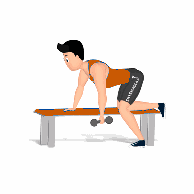

Remada Unilateral

Exercício com enfoque para hipertrofia e fortalecimento dos músculos dorsais. Na execução, estimula também os músculos auxiliares, tais como: bíceps e trapézio.
Ficha Técnica
Tipo: Musculação
Grupo Muscular: Costas
Aparelho: Nenhum
Músculos: Nenhum
Como realizar
- Utilize um banco, apoie o joelho e a mão direita sobre ele;
- O pé esquerdo deve ficar afastado do corpo;
- Com o tronco na posição horizontal, segure o peso com a mão esquerda;
- Puxe o halter até a altura do quadril, flexionando o cotovelo para trás do corpo, concentrando a força nos músculos das costas;
- Desça o peço novamente à posição inicial de forma controlada;
- Ao término das repetições, repita os movimentos para o outro lado.
 RC STORE
RC STORE